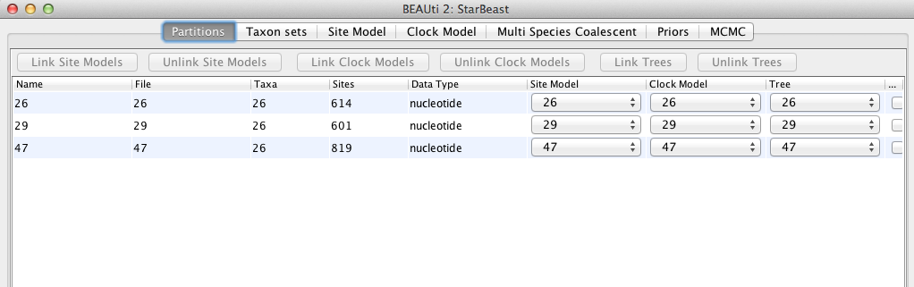
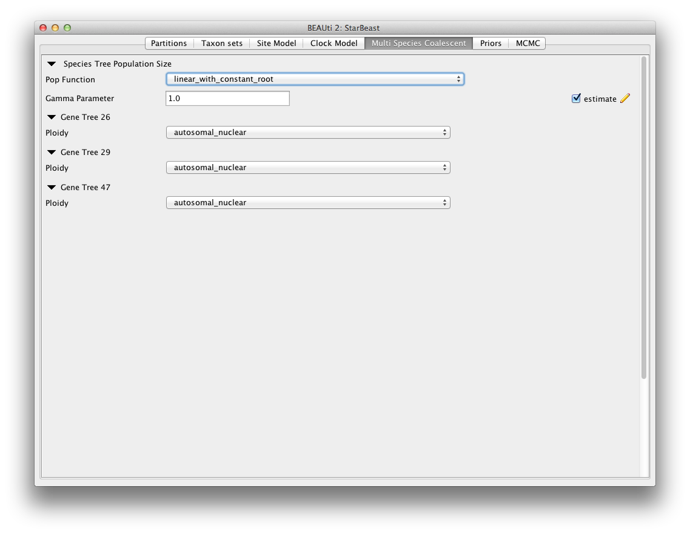
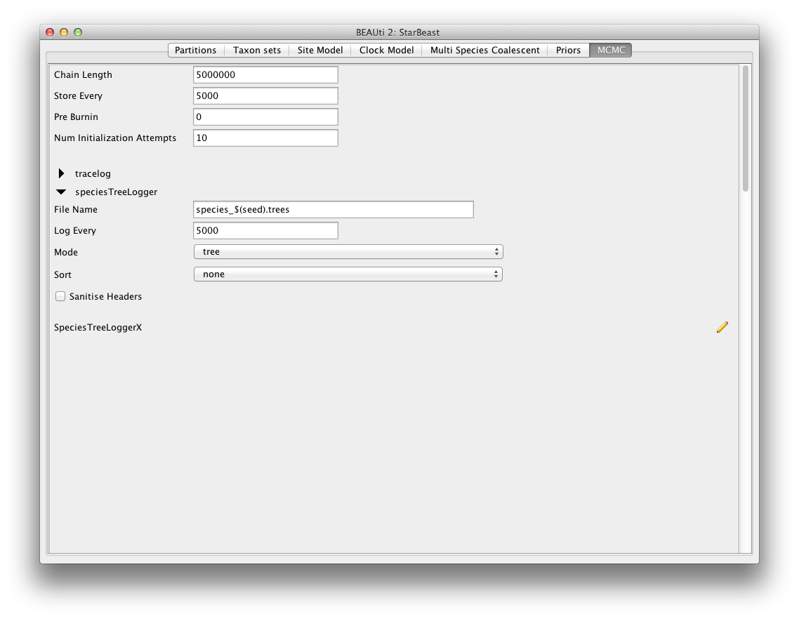
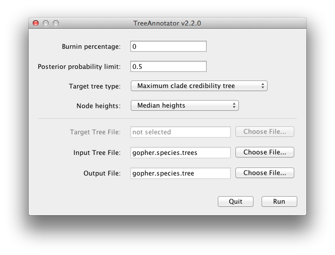

| Figure 1: Select a new template in BEAUti. |
*BEAST in BEAST 2.0 |
In this tutorial we describe a full Bayesian framework for species tree estimation. The statistical methodology described in this tutorial is known by the acronym *BEAST (pronounced "star beast") [2].
You will need the following software at your disposal:
This tutorial will guide you through the analysis of three loci sampled from 26 individuals representing nine species of pocket gophers. This is a subset of previous published data [1]. The objective of this tutorial is to estimate the species tree that is most probable given the multi-individual multi-locus sequence data. The species tree has nine taxa, whereas each gene tree has 26 taxa. *BEAST 2 will co-estimate three gene trees embedded in a shared species tree [2, for details].
The first step will be to convert a NEXUS file with a DATA or CHARACTERS block into a BEAST XML input file. This is done using the program BEAUti (Bayesian Evolutionary Analysis Utility). This is a user-friendly program for setting the evolutionary model and options for the MCMC analysis. The second step is to actually run BEAST using the input file that contains the data, model and settings. The final step is to explore the output of BEAST in order to diagnose problems and to summarize the results.
Run BEAUti by double clicking on its icon.
*BEAST uses a different template from the standard. This means that to use BEAUti for *BEAST, the first thing to do is change the template. Choose the File/Templates/StarBeast item. When changing a template, BEAUti deletes all previously imported data and start with a new empty template. So, if you already loaded some data, a warning message pops up indicating that this data will be lost if you switch templates.
Figure 1: Select a new template in BEAUti.
*BEAST is a multi-individual, multi-locus method method. The data for each locus is stored as one alignment in its own NEXUS file. Taxa names in each alignment have to be unique, but duplicates across alignments are fine.
To load a NEXUS format alignment, simply select the Import Alignment option from the File menu:
Select three files called 26.nex, 29.nex, 47.nex by holding shift key. You can find the files in the examples/nexus directory in the directory where BEAST was installed. Each file contains an alignment of sequences of from an independent locus. The 26.nex looks like this (content has been truncated):
#NEXUS
[TBO26oLong]
BEGIN DATA;
DIMENSIONS NTAX =26 NCHAR=614;
FORMAT DATATYPE = DNA GAP = - MISSING = ?;
MATRIX
Orthogeomys_heterodus ATTCTAGGCAAAAAGAGCAATGC ...
Thomomys_bottae_awahnee_a ????????????????????ATGCTG ...
Thomomys_bottae_awahnee_b ????????????????????ATGCTG ...
Thomomys_bottae_xerophilus ????????????????????ATGCTG ...
Thomomys_bottae_cactophilus ????????????????AGCAATGCT ...
... ...
;
END;
Once loaded, the three partitions are displayed in the main panel. You can double click any alignment (partition) to show its detail.

Figure 2: Data partition panel after loading alignments.
For multi-locus analyses, BEAST can link or unlink substitutions models across the loci by clicking buttons on the top of Partitions panel. The default of *BEAST is unlinking all models: substitution model, clock model, and tree models. Note that you should only unlink the tree model across data partitions that are actually genetically unlinked. For example, in most organisms all the mitochondrial genes are effectively linked due to a lack of recombination and they should be set up to use the same tree model in a *BEAST analysis.
Each taxon in a *BEAST analysis is associated with a species. Typically the species name is already embedded inside the taxon. The species name should be easy to extract; place it either at the beginning or the end, separated by a “special” character which does not appear in names. For example, aria_334259, coast_343436 (using an underscore) or 10x017b.wrussia, 2x305b.eastis (using a dot).
We need to tell BEAUti somehow which lineages in the alignments go with taxa in the species tree. Select the Taxon Set panel, and a list of taxa from the alignments is shown together with a default guess by BEAUti. In this case, the guess is not very good, so we want to change this. You can manually change each of the entries in the table, or press the guess button and a dialog is shown where you can choose from several ways to try to detect the taxon from the name of the lineages, or have a mapping stored in a file. In this case, splitting the name on the underscore character (’_’) and selecting the second group will give us the mapping that we need.
Figure 3: Selecting taxon sets in BEAUti using the guess dialog from the taxon set panel.
Alternatively, the mapping can be read from a trait file. A proper trait file is tab delimited. The first row is always traits followed by the keyword species in the second column and separated by tab. The rest of the rows map each individual taxon name to a species name: the taxon name in the first column and species name in the second column separated by tab. For example:
traits species taxon1 speciesA taxon2 speciesA taxon3 speciesB ... ...
The next thing to do is to click on the Site Model tab at the top of the main window. This will reveal the evolutionary model settings for BEAST. Exactly which options appear depend on whether the data are nucleotides, or amino acids, or binary data, or general data. The settings that will appear after loading the data set will be the default values so we need to make some changes.
Most of the models should be familiar to you. For this analysis, we will select each substitution model listed on the left side in turn to make the following change: select HKY for substitution model and Empirical for the Frequencies.
Figure 4: Setting up substitution and site models for the gopher alignments.
Second, click on the Clock Models tab at the top of the main window. In this analysis, we use the Strict Clock molecular clock model as default. Your model options should now look like this:
Figure 5: Setting up clock models for the gopher alignments.
The Estimate check box is unchecked for the first clock model and checked for the rest clock models, because we wish to estimate the substitution rate of each subsequent locus relative to the first locus whose rate is fixed to 1.0.
The Multi Species Coalescent panel allows settings to the multi species coalescent model to be specified for each tree. *BEAST has a different tree prior panel where users can only configure the species tree prior not gene tree priors (which are automatically specified by the multispecies coalescent). Currently, we have two species tree priors: Yule Process and Birth-Death Process; and three population size models: Piecewise linear and constant root, Piecewise linear, and Piecewise constant. In this analysis, we use piecewise linear and constant root.
The Ploidy item determines the type of sequence (mitochondrial, nuclear, X, Y). This matters since different modes of inheritance gives rise to different effective population sizes. In this analysis, we simply use a random starting tree.

Figure 6: Setting up multi species coalescent parameters.
The Priors panel allows priors to be specified for each parameter in the model. The Operators panel (hidden) is used to configure technical settings that affect the efficiency of the MCMC program. We leave these two panels unchanged in this analysis.
The next tab, MCMC, provides more general settings to control the length of the MCMC and the file names.
Firstly we have the Length of chain. This is the number of steps the MCMC will make in the chain before finishing. The appropriate length of the chain depends on the size of the data set, the complexity of the model and the accuracy of the answer required. The default value of 10,000,000 is entirely arbitrary and should be adjusted according to the size of your data set. For this data set let’s set the chain length to 5,000,000 as this will run reasonably quickly on most modern computers (a few minutes).
The next options specify how often the parameter values in the Markov chain should be displayed on the screen and recorded in the log file. The screen output is simply for monitoring the programs progress so can be set to any value (although if set too small, the sheer quantity of information being displayed on the screen will actually slow the program down). For the log file, the value should be set relative to the total length of the chain. Sampling too often will result in very large files with little extra benefit in terms of the precision of the analysis. Sample too infrequently and the log file will not contain much information about the distributions of the parameters. You probably want to aim to store no more than 10,000 samples so this should be set to no less than chain length / 10,000.
For this exercise we will set the screen log to 10,000 and the trace log to 5,000. The final two options give the file names of the log files for the sampled parameters and the trees. These will be set to a default based on the name of the imported NEXUS file.

Figure 7: Setting up the MCMC paremeters.
If you are using windows then we suggest you add the suffix .txt to both of these (so, gopher.log.txt and gopher.trees.txt) so that Windows recognizes these as text files.
We are now ready to create the BEAST XML file. To do this, either select the File/Save or File/Save As option from the File menu. Check the default priors setting and click Continue. Save the file with an appropriate name (we usually end the filename with .xml, i.e., gopher.xml). We are now ready to run the file through BEAST.
Now run BEAST and when it asks for an input file, provide your newly created XML file as input by click Choose File ..., and then click Run.
Figure 8: Launching BEAST.
BEAST will then run until it has finished reporting information to the screen. The actual results files are saved to the disk in the same location as your input file. The output to the screen will look something like this:
BEAST v2.2.0, 2002-2014
Bayesian Evolutionary Analysis Sampling Trees
Designed and developed by
Remco Bouckaert, Alexei J. Drummond, Andrew Rambaut & Marc A. Suchard
Department of Computer Science
University of Auckland
remco@cs.auckland.ac.nz
alexei@cs.auckland.ac.nz
Institute of Evolutionary Biology
University of Edinburgh
a.rambaut@ed.ac.uk
David Geffen School of Medicine
University of California, Los Angeles
msuchard@ucla.edu
Downloads, Help & Resources:
http://beast2.org/
Source code distributed under the GNU Lesser General Public License:
http://github.com/CompEvol/beast2
BEAST developers:
Alex Alekseyenko, Trevor Bedford, Erik Bloomquist, Joseph Heled,
Sebastian Hoehna, Denise Kuehnert, Philippe Lemey, Wai Lok Sibon Li,
Gerton Lunter, Sidney Markowitz, Vladimir Minin, Michael Defoin Platel,
Oliver Pybus, Chieh-Hsi Wu, Walter Xie
Thanks to:
Roald Forsberg\includeimage, Beth Shapiro and Korbinian Strimmer
... ...
4980000 -3827.2093 279.2 -4293.2486 22.1146 24s/Msamples
4990000 -3842.9689 276.3 -4295.6213 17.6877 24s/Msamples
5000000 -3798.1962 278.2 -4280.7865 22.0904 24s/Msamples
Operator Tuning #accept #reject Pr(m) Pr(acc|m)
NodeReheight(Reheight.t:Species) - 205317 486572 0.1386 0.2967
ScaleOperator(popSizeBottomScaler.t:Species) 0.1902 10224 26338 0.0074 0.2796
ScaleOperator(popMeanScale.t:Species) 0.4890 5795 16242 0.0044 0.2630
UpDownOperator(updown.all.Species) 0.5029 38885 108717 0.0295 0.2634
ScaleOperator(YuleBirthRateScaler.t:Species) 0.2416 7155 15125 0.0044 0.3211
ScaleOperator(treeScaler.t:26) 0.7580 8510 42962 0.0102 0.1653
ScaleOperator(treeRootScaler.t:26) 0.4424 11487 39392 0.0102 0.2258
Uniform(UniformOperator.t:26) - 287517 225590 0.1024 0.5603
SubtreeSlide(SubtreeSlide.t:26) 0.5560 418 256419 0.0512 0.0016 Try decreasing size to about 0.278
Exchange(narrow.t:26) - 115438 140923 0.0512 0.4503
Exchange(wide.t:26) - 1363 49988 0.0102 0.0265
WilsonBalding(WilsonBalding.t:26) - 1882 49890 0.0102 0.0364
ScaleOperator(StrictClockRateScaler.c:29) 0.4744 13355 37595 0.0102 0.2621
ScaleOperator(treeScaler.t:29) 0.7567 8137 42785 0.0102 0.1598
ScaleOperator(treeRootScaler.t:29) 0.4101 12191 38887 0.0102 0.2387
Uniform(UniformOperator.t:29) - 296262 216280 0.1024 0.5780
SubtreeSlide(SubtreeSlide.t:29) 0.5724 339 255443 0.0512 0.0013 Try decreasing size to about 0.286
Exchange(narrow.t:29) - 117912 138109 0.0512 0.4606
Exchange(wide.t:29) - 2229 49303 0.0102 0.0433
WilsonBalding(WilsonBalding.t:29) - 2459 49001 0.0102 0.0478
UpDownOperator(updown.29) 0.7793 10314 40694 0.0102 0.2022
ScaleOperator(StrictClockRateScaler.c:47) 0.5490 12974 38097 0.0102 0.2540
ScaleOperator(treeScaler.t:47) 0.7363 8746 42523 0.0102 0.1706
ScaleOperator(treeRootScaler.t:47) 0.4742 7774 43670 0.0102 0.1511
Uniform(UniformOperator.t:47) - 276942 234361 0.1024 0.5416
SubtreeSlide(SubtreeSlide.t:47) 0.5044 307 255119 0.0512 0.0012 Try decreasing size to about 0.252
Exchange(narrow.t:47) - 91846 164747 0.0512 0.3579
Exchange(wide.t:47) - 731 50281 0.0102 0.0143
WilsonBalding(WilsonBalding.t:47) - 937 50377 0.0102 0.0183
UpDownOperator(updown.47) 0.7397 10853 40537 0.0102 0.2112
UpDownOperator(strictClockUpDownOperator.c:47) 0.7278 9987 41373 0.0102 0.1945
UpDownOperator(strictClockUpDownOperator.c:29) 0.7761 10040 40724 0.0102 0.1978
ScaleOperator(KappaScaler.s:26) 0.3401 469 1197 0.0003 0.2815
ScaleOperator(KappaScaler.s:29) 0.2955 436 1231 0.0003 0.2615
ScaleOperator(KappaScaler.s:47) 0.3199 379 1298 0.0003 0.2260
ScaleOperator(popSizeTopScaler.t:Species) 0.1910 23665 54936 0.0157 0.3011
Tuning: The value of the operator's tuning parameter, or '-' if the operator can't be optimized.
#accept: The total number of times a proposal by this operator has been accepted.
#reject: The total number of times a proposal by this operator has been rejected.
Pr(m): The probability this operator is chosen in a step of the MCMC (i.e. the normalized weight).
Pr(acc|m): The acceptance probability (#accept as a fraction of the total proposals for this operator).
Total calculation time: 135.584 seconds
End likelihood: -3798.196207797654
Run the program called Tracer to analyze the output of BEAST. When the main window has opened, choose Import Trace File... from the File menu and select the file that BEAST has created called gopher.log. You should now see a window like in Figure 9.
Figure 9: Tracer with the gopher data.
Remember that MCMC is a stochastic algorithm so the actual numbers will not be exactly the same.
On the left hand side is a list of the different quantities that BEAST has logged. There are traces for the posterior (this is the log of the product of the tree likelihood and the prior probabilities), and the continuous parameters. Selecting a trace on the left brings up analyses for this trace on the right hand side depending on tab that is selected. When first opened, the ‘posterior’ trace is selected and various statistics of this trace are shown under the Estimates tab. In the top right of the window is a table of calculated statistics for the selected trace.
Tracer will plot a (marginal posterior) distribution for the selected parameter and also give you statistics such as the mean and median. The 95% HPD lower or upper stands for highest posterior density interval and represents the most compact interval on the selected parameter that contains 95% of the posterior probability. It can be thought of as a Bayesian analog to a confidence interval.
Select the treeModel.rootHeight parameter and the next three (hold shift whilst selecting). This will show a display of the age of the root and the three gene trees. If you switch the tab at the top of the window to Marginal Density then you will get a plot of the marginal posterior densities of each of these date estimates overlayed, as shown in Figure 10.
Figure 10: Tracer showing the root heights of the lineage trees.
BEAST also produces a sample of plausible trees. These can be summarized using the program TreeAnnotator. This will take the set of trees and identify a single tree that best represents the posterior distribution. It will then annotate this selected tree topology with the mean ages of all the nodes as well as the 95% HPD interval of divergence times for each clade in the selected tree. It will also calculate the posterior clade probability for each node. Run the TreeAnnotator program and set it up to look like in Figure 11.

Figure 11: Using TreeAnnotator to summarise the tree set.
The burnin is the number of trees to remove from the start of the sample. Unlike Tracer which specifies the number of steps as a burnin, in TreeAnnotator you need to specify the actual number of trees. For this run, we use the default setting.
The Posterior probability limit option specifies a limit such that if a node is found at less than this frequency in the sample of trees (i.e., has a posterior probability less than this limit), it will not be annotated. The default of 0.5 means that only nodes seen in the majority of trees will be annotated. Set this to zero to annotate all nodes.
For Target tree type you can either choose a specific tree from a file or ask TreeAnnotator to find a tree in your sample. The default option, Maximum clade credibility tree, finds the tree with the highest product of the posterior probability of all its nodes.
Choose Mean heights for node heights. This sets the heights (ages) of each node in the tree to the mean height across the entire sample of trees for that clade.
For the input file, select the trees file that BEAST created (by default this will be called gopher.species.trees) and select a file for the output (here we called it gopher.species.tree).
Now press Run and wait for the program to finish.
Finally, we can look at the tree in another program called FigTree. Run this program, and open the gopher.species.tree file by using the Open command in the File menu. The tree should appear. You can now try selecting some of the options in the control panel on the left. Try selecting Node Bars to get node age error bars. Also turn on Branch Labels and select posterior to get it to display the posterior probability for each node. Under Appearance you can also tell FigTree to colour the branches by the rate. You should end up with something like Figure 12.
Figure 12: Figtree representation of the species tree.
Alternatively, you can load the species tree set into DensiTree and set it up as follows.
The image should look something like Figure 13

Figure 13: DensiTree representation of the species tree.
Exercise: There is about 75% support for heterodus to be an outgroup, and about 17% for heterodus to be in a clade with bottea, umbinus and townsendii. Can you explain where the other 8% went?
DensiTree can be used to show the branch widths of summary tree from tree annotator as population sizes. Under ‘Line Width’ in DensiTree, choose ‘BY_METADATA_NUMBER’ for the bottom and for the top, and choose numbers 2 and 3 in the ’top’ and ’bottom’ spinner. Left, the bottom represents dmv1, the top dmv2 in the summary tree, which do not quite match in areas with little posterior support for the clades (see Figure 13 to see which clades have little support).
Right, the top is matched up with the bottom of the branch above, using the ‘Make fit to bottom’ option for the top. This looks a bit prettier, but may not be quite accurate.
Alternatively, a consensus tree can be generated by biopy (http://code.google.com/p/biopy/) with using 1-norm left, and 2-norm right.
Showing all consensus trees with population widths (use By Metadata Pattern, for top and bottom and use
.*dmv=.([^,]*).*
for the bottom pattern and
.*dmv=.[^,]*,([^\}]*).*
for the top pattern. This gives us this visualisation:
Using BEAUti, set up the same analysis but under the MCMC options, select the Sample from prior only option. This will allow you to visualize the full prior distribution in the absence of your sequence data. Summarize the trees from the full prior distribution and compare the summary to the posterior summary tree.
This document was translated from LATEX by HEVEA.